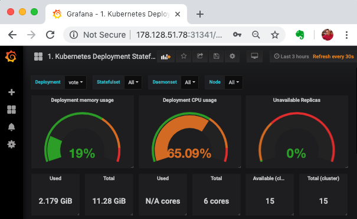

Kubernetes Horizonntal Pod Autoscaling
With Horizontal Pod Autoscaling, Kubernetes automatically scales the number of pods in a replication controller, deployment or replica set based on observed CPU utilization (or, with alpha support, on some other, application-provided metrics).
The Horizontal Pod Autoscaler is implemented as a Kubernetes API resource and a controller. The resource determines the behavior of the controller. The controller periodically adjusts the number of replicas in a replication controller or deployment to match the observed average CPU utilization to the target specified by user
Prerequisites
- Metrics Server. This needs to be setup if you are using kubeadm etc. and replaces heapster starting with kubernetes version 1.8.
- Resource Requests and Limits. Defining CPUas well as Memory requirements for containers in Pod Spec is a must
Deploying Metrics Server
Kubernetes Horizontal Pod Autoscaler along with kubectl top command depends on the core monitoring data such as cpu and memory utilization which is scraped and provided by kubelet, which comes with in built cadvisor component. Earlier, you would have to install a additional component called heapster in order to collect this data and feed it to the hpa controller. With 1.8 version of Kubernetes, this behavior is changed, and now metrics-server would provide this data. Metric server is being included as a essential component for kubernetes cluster, and being incroporated into kubernetes to be included out of box. It stores the core monitoring information using in-memory data store.
If you try to pull monitoring information using the following commands
kubectl top pod
kubectl top node
it does not show it, rather gives you a error message similar to
[output]
Error from server (NotFound): the server could not find the requested resource (get services http:heapster:)
Even though the error mentions heapster, its replaced with metrics server by default now.
Deploy metric server with the following commands,
cd ~
git clone https://github.com/kubernetes-incubator/metrics-server.git
kubectl apply -f metrics-server/deploy/kubernetes/
Validate
kubectl get deploy,pods -n kube-system --selector='k8s-app=metrics-server'
Monitoring has been setup.
Fixing issues with Metrics deployment
There is a known issue as off Dec 2018 with Metrics Server where is fails to work event after deploying it using above commands. This can be fixed with a patch using steps below.
To apply a patch to metrics server,
wget -c https://gist.githubusercontent.com/initcron/1a2bd25353e1faa22a0ad41ad1c01b62/raw/008e23f9fbf4d7e2cf79df1dd008de2f1db62a10/k8s-metrics-server.patch.yaml
kubectl patch deploy metrics-server -p "$(cat k8s-metrics-server.patch.yaml)" -n kube-system
Now validate with
kubectl top node
kubectl top pod
where expected output shoudl be similar to,
kubectl top node
NAME CPU(cores) CPU% MEMORY(bytes) MEMORY%
vis-01 145m 7% 2215Mi 57%
vis-13 36m 1% 1001Mi 26%
vis-14 71m 3% 1047Mi 27%
Create a HPA
To demonstrate Horizontal Pod Autoscaler we will use a custom docker image based on the php-apache image
file: vote-hpa.yaml
apiVersion: autoscaling/v1
kind: HorizontalPodAutoscaler
metadata:
name: vote
spec:
minReplicas: 4
maxReplicas: 45
targetCPUUtilizationPercentage: 70
scaleTargetRef:
apiVersion: apps/v1
kind: Deployment
name: vote
apply
kubectl apply -f vote-hpa.yaml
Validate
kubectl get hpa
kubectl describe hpa vote
kubectl get pod,deploy
If you have a monitoring system such as grafana, you could also view the graphs for vote deployment.

Load Test
file: loadtest-job.yaml
apiVersion: batch/v1
kind: Job
metadata:
name: loadtest
spec:
template:
spec:
containers:
- name: siege
image: schoolofdevops/loadtest:v1
command: ["siege", "--concurrent=5", "--benchmark", "--time=6m", "http://vote"]
restartPolicy: Never
backoffLimit: 4
And launch the loadtest
kubectl apply -f loadtest-job.yaml
To monitor while the load test is running ,
watch kubectl top pods
To get information about the job
kubectl get jobs
kubectl describe job loadtest
To check the load test output
kubectl logs -f loadtest-xxxx
[replace loadtest-xxxx with the actual pod id.]
[Sample Output]
** SIEGE 3.0.8
** Preparing 15 concurrent users for battle.
root@kube-01:~# kubectl logs vote-loadtest-tv6r2 -f
** SIEGE 3.0.8
** Preparing 15 concurrent users for battle.
.....
Lifting the server siege... done.
Transactions: 41618 hits
Availability: 99.98 %
Elapsed time: 299.13 secs
Data transferred: 127.05 MB
Response time: 0.11 secs
Transaction rate: 139.13 trans/sec
Throughput: 0.42 MB/sec
Concurrency: 14.98
Successful transactions: 41618
Failed transactions: 8
Longest transaction: 3.70
Shortest transaction: 0.00
FILE: /var/log/siege.log
You can disable this annoying message by editing
the .siegerc file in your home directory; change
the directive 'show-logfile' to false.
Now check the job status again,
kubectl get jobs
NAME DESIRED SUCCESSFUL AGE
vote-loadtest 1 1 10m
- Keep monitoring for the load on the pod as the job progresses.
- Keep a watch from grafana as well to see the resource utilisation for vote deployment.
- You should see hpa in action as it scales out/in the vote deployment with the increasing/decreasing load.

Summary
In this lab, you have successfull configured and demonstrated dynamic scaling ability of kubernetes using horizontalpodautoscalers. You have also learnt about a new jobs controller type for running one off or batch jobs.